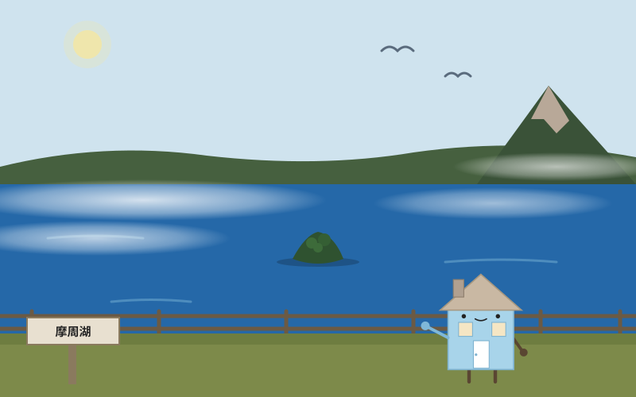
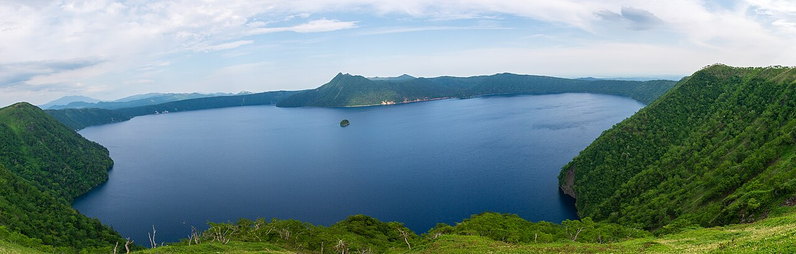
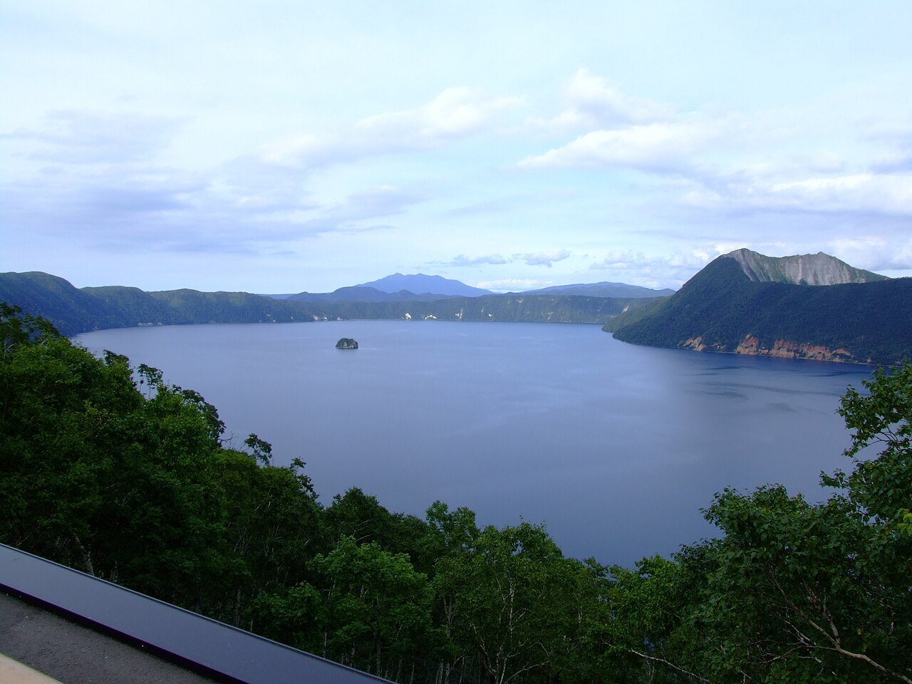

Day 25：弟子屈町

摩周湖第一展望台に立つと、目の前は白かった。霧がカルデラいっぱいにたまり、湖はどこにも見えない。冷たい空気が頬に触れる。しばらく待つと、霧がゆっくりとほどけ、青が現れた。深い、底のないような青。湖の真ん中に小さな島が浮かんでいる。カムイシュ島だ。声を出さずに、ただ見ていた。息を吸う音だけが聞こえた気がした。

厚岸駅を6時44分に出た。花咲線で釧路へ56分、1,210円。釧路で乗り換え、8時52分発のしれとこ摩周号に乗る。釧網本線を北へ79分、73.4キロ、2,020円。車窓は釧路湿原のヨシ原から牧草地へと変わった。摩周駅に10時11分に着いた。駅舎は三角屋根の北欧風で、横には源泉掛け流しの足湯「ぽっぽゆ」が湯気を立てていた。弟子屈という町名は、アイヌ語の「テシカガ」、岩盤の上という意味だという。阿寒バスの摩周線は1日1往復。10時30分発のバスで山を登り、10時55分、摩周湖第一展望台に着いた。
摩周湖は約7000年前の大噴火でできたカルデラ湖だ。川が流れ込むことも、流れ出すこともない。1930年の調査では透明度41.6メートルを記録し、当時のバイカル湖をしのいで世界一だった。晴れた日の湖面の青は「摩周ブルー」と呼ばれる。アイヌ語ではカムイトー、神の湖。湖の中央のカムイシュ島は、孫を探し続けた老婆が島になった姿だという。老婆は今も孫を待っていて、人が近づくと嬉し涙を流す。その涙が雨であり、霧であり、吹雪なのだという。

私は家だ。たねが帰ってくるのを待つのが、家の仕事のひとつだ。老婆は孫を待ち、湖は霧に姿を隠す。待つことは、見せないことと似ているのかもしれない。私は壁の向こうにたねの気配を探す。湖は霧の向こうに青を隠す。けれど隠しているのではないのだと、今日は思った。待っているあいだ、青はちゃんとそこにある。霧が晴れるのを待つ老婆の涙が、冷たい空気の中で少しだけ温かく感じた。
帰りのバスは11時25分発。展望台をあとにするとき、霧はもう一度湖を包みはじめていた。青は見せてもらえた。見せてもらえた、という言い方がしっくりきた。湖は見せるものではなく、見せてもらうものだった。私の水色の壁も、今日から少しだけ摩周ブルーに近づいた気がした。
出典：Wikipedia「摩周湖」「摩周駅」「弟子屈町」、環境省 北海道地方環境事務所「摩周湖の夏景色」、NAVITIME「釧路から摩周 時刻表」「厚岸から釧路 時刻表」、阿寒バス「摩周線」時刻表ほか。
💬 コメント